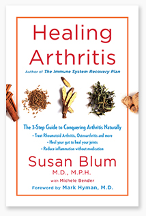

Sample Copy
Use this copy for any of your emails or social media platforms. First, click the item that you want to view below, then simply copy and paste the content into your own email, replacing anything between the brackets with your own unique values.
- Sample Email Copy #1
-
Subject Line Options
- Take Back Your Kitchen
- Make Cooking Fun Again
- Looking for Cooking Inspiration?
Dear [contact name],
I recently got a sneak peek of my friend Dr. Mark Hyman’s new book, Eat Fat, Get Thin Cookbook, and I was blown away! Dr. Hyman says, “We have the power to transform our food industry and the health of the world. This transformation starts with you and what you put into your shopping carts, stock your home with, and serve on your kitchen table. It starts with what you eat every single day. “
This really stuck with me.
I am a huge advocate making your own meals so that you can control the quality of the food that you eat, but we all need a little bit of inspiration from time to time to get back into the kitchen and make beautiful meals. That is why I was so impressed with Eat Fat, Get Thin Cookbook. The recipes are simply mouthwatering and made for everyone -- a novice or chef! Not only o they taste great, but they are designed to keep you satiated by using food as medicine.
Dr. Hyman has created a FREE Q&A video about the importance of cooking and how to create a healthy kitchen AND he’s sharing a cooking video of one of his favorites recipes from the new cookbook -- a delicious Taco Salad!
Watch these video (PLUS discover how you can get your copy of Dr. Hyman’s new book and receive up to 4 not-to-be-missed bonus gifts!) right here: [insert affiliate link]
To your health,
[insert your signature]
- Sample Email Copy #2
-
Subject Line Options
- Take Back Your Kitchen
- Looking for Cooking Inspiration?
Dear [contact name],
My friend Dr. Mark Hyman recently said, “the only way to ensure that you and your family are eating safe, nutritious food is to get back into the kitchen and make the time to connect with what you’re eating.”
How true is that? Especially when big food companies are pushing their convenience meals on us 24/7. But how convenient is it to be sick and stuck with hospital bills as a result of eating processed junk?
We all lead busy lives, but making time to cook with our friends and family every week is not only a way to ensure we’re getting the nutrients we need, but it’s also a way to increase joy in our lives.
I recently got a sneak peek of Dr. Hyman’s new book, Eat Fat, Get Thin Cookbook and was even more inspired to get into the kitchen and make beautiful meals with my family. It’s filled with delicious soups, smoothies, entrees, salads, and desserts that all feature the one nutrient that makes food taste great: healthy fats!
Dr. Hyman has created a FREE Q&A video about the importance of cooking, using fats, and how to create a healthy kitchen AND he’s sharing a cooking video of one of his favorites recipes from the new cookbook -- a delicious Taco Salad!
Watch these video (PLUS discover how you can get your copy of Dr. Hyman’s new book and receive up to 4 not-to-be-missed bonus gifts!) right here: [insert affiliate link]
To your health,
[insert your signature]
- Sample Email Copy #3
-
- Take Back Your Kitchen
- Make Cooking Fun Again
- Looking for Cooking Inspiration?
Dear [contact name],
Most of us live very busy and hectic lives. The thought of going into the kitchen and making a homemade meal seems exhausting, but cooking our own food is a HUGE part of getting healthy.
I recently got a sneak peek of my friend Dr. Mark Hyman’s new book, Eat Fat, Get Thin Cookbook, and I am so inspired to get back into the kitchen and cook beautiful, wholesome meals. The recipes in this book are simple yet mouthwatering. Not only are they designed to be very tasty, but they are also designed for optimum nutrition. Filled with smoothies, soups, breakfast dishes, lunch and dinner meals, and desserts, this book will become a new staple in your kitchen. I promise, you will love it!
Dr. Hyman has created a free Q&A to talk about this book, the importance of cooking, and how to create a healthy kitchen. Watch this video AND a cooking video featuring one of my favorite recipes from the cookbook, a delicious Taco Salad, right here: [insert affiliate link] PLUS discover how you can get your copy of Dr. Hyman’s new book and receive up to 4 not-to-be-missed bonus gifts!
To your health,
[insert your signature]
- Guest Blog Post #1
-
4 Simple Steps to Detoxify Your Kitchen
Your body is not the only thing that needs a good detox once in awhile. When I mention detoxification, you probably think about something your body does to lose weight, support your liver, and generally feel and look better. Strange as it sounds, your kitchen could also use a good detox!
If you make your kitchen a safe zone, with only foods that nourish rather than harm, then you will automatically make the right choices. If you fill it with crap, you will eat crap, no matter how much willpower you have.
The first step to detoxify your kitchen, then, is not to load it with junk and clear out whatever junk currently is stocking your cupboards. If it’s not there you won’t eat it. It’s that simple.
I’ve created a four-step process to effectively detoxify your kitchen and restock it with healthy foods.
Step 1: Set aside an hour to purge your kitchen
Schedule it into your planner if you need to. This requires some detective work. Read food labels for added sugar and other junk ingredients that don’t belong in a healthy kitchen. Have a big garbage bag ready (better yet, recycle containers if you can) to dump the junk. It might take longer depending on how much hidden junk and toxic ingredients lurk in your cupboard or fridge.
Step 2: Scrutinize labels
Ideally, you’ll replace anything that is questionable with real fresh or whole foods without labels. A fresh avocado or a kiwi doesn’t come with a nutrition facts label, or a bar code or ingredient list. If you decide to keep foods with labels, follow these rules:
- Focus on the ingredient list, not the “nutrition facts” that are mostly designed and developed under huge food industry lobby efforts to confuse and confound your efforts to eat healthy.
- If you don’t recognize, can’t pronounce it, or it is in Latin or you don’t have it in your cupboard and you wouldn’t use it in a recipe – maltodextrin, for instance – then don’t use it.
- On every ingredient list, note that the most abundant ingredient is listed first. The others follow in descending order by weight.
- Be conscious of ingredients that may not be on the list. Some ingredients may be exempt from labels. Get rid of these foods.
- Beware of foods with health claims on the label. These claims usually signal a marketing ploy to make you think they’re good for you when they’re really just healthy pretenders. Things like sports beverages, energy bars, and even multigrain breads (which often contain high fructose corn syrup) fall into this category.
Now that you know what to look for, I’ll walk you through the process of determining what can stay and what needs to take a permanent vacation on your kitchen detox.
Step 3: Ditch These Foods
When you detoxify your body, you eliminate harmful toxins. Likewise, when you detoxify your kitchen you’ll want to get rid of any food that contains these harmful ingredients.
- You probably know obvious sugar culprits, but be aware of hidden sugars that lurk in salad dressings, processed foods, drinks, and even “healthy” foods like cereals and wheat. Sugar goes by many aliases. Just as boys named Andrew often go by Andy or Drew, sugar might be called organic cane juice, honey, agave, maple syrup, cane syrup, or molasses. There are 257 names for sugar, most made from corn with names that you wouldn’t recognize like maltodextrin and xanthan gum, which make you fat and addicted. Look carefully at condiments like salad dressing, barbecue sauce, or ketchup, which are often high-fructose corn syrup traps.
- Bad fats. Don’t be afraid of fat. Fat doesn’t make you fat, but the wrong fats can wreak serious metabolic havoc. Toss out any highly refined cooking oils such as corn and soy, fried foods you may have stored in your freezer, and margarine or shortening. These have dangerous trans fats that create inflammation and cause heart disease. Scour labels for the words “hydrogenated fat” (another phrase for trans fat), which has finally been declared not safe for consumption by the Food and Drug Administration (FDA).
- Artificial sweeteners. Throw out food with artificial sweeteners of all kinds (aspartame, NutraSweet, Splenda, sucralose, and sugar alcohols — any word that ends with “ol,” like xylitol or sorbitol). Stevia may be better than aspartame but only whole plant extract, not Pure Via and Truvia, which are made by Pepsi and Coke and are chemical extracts of stevia. Use it sparingly. A new non-caloric sweetener that comes from monk fruit that is rich in antioxidants can also be used in small amounts. But remember, any sweetener can make you hungry, lower your metabolism, create gas, and store belly fat.
- Anything with ingredients you can’t pronounce. If you purchase something with a nutrition label, there should be less than five ingredients on it and all things that a third grader would understand like “tomatoes, water, salt.” Focus on the ingredient list, not the “nutrition facts,” which are mostly designed and developed under huge food industry lobby efforts to confuse and confound your efforts to eat healthy.
- Any potentially questionable food or ingredients. Seemingly safe foods like spices and seasonings can contain maltodextrin, autolyzed yeast extract, and even high fructose corn syrup that have no place in a healthy kitchen.
Step 4: Stock Up on These
Now that you’ve purged unhealthy foods, you want to replace kitchen cabinets and cupboards with fresh, healthy foods. These are the ones you’ll want to load your kitchen with:
- Non-starchy veggies are freebies. Eat as many as you like! Limit fruits because they increase your insulin levels. Berries are your best bet. When possible, choose organic, seasonal, and local produce. When you can, avoid the most pesticide contaminated fruits and vegetables by consulting the Environmental Working Group’s (www.ewg.org) “Dirty Dozen” list and instead choose from the “Clean Fifteen” list featuring the least contaminated options. Just make sure you’re buying unseasoned or unsweetened varieties. Also check out your local farmers market or community supported agriculture (CSA).
- Dry foods. These staple foods usually have a longer shelf life and include raw or lightly roasted nuts and seeds, legumes, quinoa, and gluten-free grains.
- Herbs, spices, and seasonings. You’ll want to have a range of pantry ingredients, including seasonings and spices, on hand. Buy organic when you can. Because you only use a little of some of these, they tend to last a long time so you get a lot of value from them. Among my favorites include extra virgin olive oil, extra virgin coconut butter, sea salt, freshly ground black pepper, and seasonings and spices. Just read your labels to ensure they don’t contain hidden sugar, gluten, or other problem additives.
- Fresh foods. Get in the habit of keeping your fridge and freezer stocked with these items. When selecting beef or meat, choose grass-fed, hormone-free, or organic, whenever possible. The United States Department of Agriculture (USDA) mandates that all poultry is raised without hormones, so look for the terms “antibiotic free” or “organic” when buying poultry. Check out the Environmental Working Group’s “Meat Eater’s Guide” to choose meat that’s good for you and good for the planet. Optimal protein choices include:
- Chicken and turkey breasts
- Ground chicken and turkey
- Grass-fed beef, lamb, and bison (buffalo) meat
- Omega-3 enriched eggs
- Whole forms of non-GMO soy food, like tofu, tempeh, and gluten-free miso (organic, when possible)
- Wild or sustainably farmed, low-mercury seafood like sardines, salmon, herring, flounder, clams, crab, oyster, perch, pollock, shrimp, sole, squid, trout, whitefish etc.). Avoid those fish that are high in mercury such as tuna, swordfish, and Chilean sea bass. Refer to the National Resources Defense Council website to download their wallet guide to choosing the fish lowest in mercury.
Now, you might need some inspiration! It’s easy to just say, I’ll buy tons of veggies and some fruit and healthy meats and fats, but what are you going to do with all of that food?
Well, my new book, Eat Fat, Get Thin Cookbook not only goes through a step-by-step guide of how to makeover your kitchen, but it features over 175 mouth-watering recipes to help you get healthy and stay healthy. I’ve included breakfast dishes, smoothies, some vegan meals, plenty of options for lunch and dinner, and even desserts! Eating food that is good for you is not about feeling deprived. If you choose the right foods and the right recipes, you can reap the benefits of a healthy style without feeling deprived.
Now you’re all set up for success!
- Guest Blog Post #2
-
Cooking with Fats
The American Heart Association recommends that adults get no more than 5 percent of their calories from saturated fat, and urges people to use vegetable oils instead. The AHA advises people to eat at least 5 to 10 percent of their calories in the form of omega 6 PUFAs - that’s polyunsaturated fat. The rationale for this is that unlike saturated fat, linolenic acid from PUFAs lower LDL cholesterol levels.
As a result, the average intake of linoleic acid which is an omega 6 fatty acid has risen sharply since the 1960s, and even more dramatically since the early 1900’s. Americans consume at least twice the amount of linoleic acid today than they did in the 1960s.
The Consequences of our Omega 6 Obsession
The increase in these highly inflammatory and unstable omega 6 fats in our diet has led to an increase all inflammatory diseases. Overconsumption of omega 6 fats and under consumption of omega 3 fats has led to increases in cardiovascular disease, type 2 diabetes, obesity, pre-diabetes, IBS, arthritis, asthma, cancer, autoimmune diseases and more!
So while the advice to eat more polyunsaturated fats instead of saturated fats may have started with good intentions, it has caused disastrous results. The oil industry has been big in pushing first trans fats, and then highly refined vegetable oil mostly omega 6 polyunsaturated fats. Yet in the forms they are consumed by most Americans, they are highly toxic.
Consider an Oil Change…
So what’s the alternative? What fats should we be cooking with? Well, definitely not refined highly processed vegetable oils. Instead, I suggest using more plant based and animal stable fats such as coconut oil and even lard. This sounds like heresy, I know, but after a deep reading of the literature on this topic from a neutral perspective, I have completely changed my diet and those of my patients. Now, I embrace coconut oil, ghee, and even some grass-fed butter as part of my diet (as long as you are not allergic to dairy).
Now, studies show saturated fat raises LDL (your so-called “bad” cholesterol) but it improves the quality of the LDL and increases its size making it less likely to promote heart disease. It also raises HDL (“good” cholesterol). Ultimately, the ratio of total to LDL cholesterol and particle number and size are a far bigger predictor of heart attacks than LDL itself. Interestingly, countries with the highest intakes of coconut oil have the lowest rates of heart disease.
While research shows coconut oil contains higher amounts of saturated fat and does increase total cholesterol, it also raises HDL, the good cholesterol the most and actually improves your TC/HDL ratio (a good thing) which is a far better predictor of heart attacks than LDL.
So, bottom line, I recommend cutting out all refined oils except for extra virgin olive oil. For cooking, you can use extra virgin coconut oil, avocado oil (which can be used at higher temperatures) and even ghee which is clarified butter.
Olive oil is best for low-heat cooking or used raw for dressing salads. Avocado oil, macadamia oil, and walnut oil also are wonderful raw and make great dressings.
With all oils, always choose organic, unrefined, cold-pressed, or expeller pressed. Be sure to do your research and don’t be afraid to contact the company directly to ensure the product is truly cold-pressed. Organic production prohibits GMOs and the use of hexanes for extraction in oils.
So, now you know what fats to use, but you might need some recipe inspiration! I’ve put over 175 recipes in my new book, Eat Fat, Get Thin Cookbook that feature so many healthy, mouthwatering fats. If you’re confused about what fats to use and how to use them, I highly recommend checking out this book so you can take advantage of healthy fats and kicks bad fats to the curb!
- Sample Social Copy
-
Tweets
- The EFGT Cookbook by @MarkHymanMD is designed to nourish the best version of you, with recipes that make your mouth water & make you feel good.
- Who said eating healthy food had to taste bad? Check out my friend @MarkHymanMD’s new cookbook for more than 175 delicious AND healthy recipes.
- The Eat Fat, Get Thin Cookbook by @MarkHymanMD is filled with over 175 recipes that feature the ingredient that makes food taste great: Fat!
- I got a sneak peek of my friend @MarkHymanMD’s new cookbook & can’t decide what to make first! The recipes are simply mouthwatering. Check it out here:
Facebook/Instagram Posts
- Mark Hyman, MD proves once and for all that fat deserves a place in our diets AND that fat is the ingredient that makes food taste better with his new book the Eat Fat, Get Thin Cookbook. Not only will you be inspired to make major changes in your health, but you'll feel delighted with all of the delicious food you can bring back into your diet! #EFGT #eatfatgetthin
- The low fat era is finally coming to an end, and to celebrate, we’re cooking up some recipes from Mark Hyman, MD’s new book, Eat Fat, Get Thin Cookbook! It’s filled with over 175 deliciously mouthwatering recipes featuring all of my favorite healthy fats. This cookbook will become a staple in your kitchen. #eatfatgetthin
- I just got a sneak peek of Mark Hyman, MD’s new book, Eat Fat, Get Thin Cookbook and am so inspired to get back into the kitchen and create beautiful meals. If you’re looking for delicious, satisfying, healthy meals for the whole family, I highly recommend this book. You'll finish it knowing for sure that there's a place for fat in our diets, and that it will make us happier and healthier. #eatfatgetthin
- The days of tasteless egg white omelets and “health foods” that taste like cardboard are over. Mark Hyman, MD’s new book Eat Fat, Get Thin Cookbook will prove to you that it’s possible to eat delicious, deeply satisfying foods while getting healthy, and it all starts with putting fat back into our meals! This book will inspire you to get back into the kitchen and make beautiful meals. #eatfatgetthin
- Mark Hyman, MD says that cooking is a transformational act and proves it with his new book, Eat Fat, Get Thin Cookbook. The recipes in this book will inspire you to reclaim your kitchen and create beautiful, delicious, and healthy meals with your whole family. #eatfatgetthin
- Quotes from the Book
-
Conventional medicine is by far the best for acute illness. But food is the best medicine for chronic disease. It works faster and better, and is cheaper than medication. And all the side effects are good ones. No drug can do what (real) food can do.
Calories matter, but far less than the information or instructions in food that control our genes, hormones, immune system, enzymes, and even our gut ora or microbiome with every single bite.
Healthy fats shut down cravings, speed up metabolism, and can help prevent and reverse heart disease, not cause it.
We need to put dangerous low-fat diets behind us as we embrace the fact that we have the most healing treatments in the world available right at our fingertips, and they come from the “farmacy,” not the pharmacy.
Our relationship with food is one of the most important relationships in our lives. It’s also one of our rst relationships. From day one, food nourishes us and enables us to live and thrive.
Once you clear out the junk and reset your body, you’ll be able to think of food as a friend who nourishes you and brings you joy instead of an enemy you have to fear or battle every day.
Dietary fat can actually speed up your metabolism and help you lose weight. Even better, once you start this program, you’ll find that it’s a gateway to something much bigger than the numbers on the scale.
Anytime I feel stressed and fail to adequately take care of myself, I always stop and remember why. Why is my health important? My health is important because I can’t show up as the best version of myself and go after my goals if I feel sick, unhealthy, unbalanced, or stressed.
I find that people who react negatively to my eating habits often behave that way because they are questioning their own diet and lifestyle.
Your body is listening to everything you say. Indulging in self-deprecation leads to stress; stress wreaks havoc on your health.
I am not an advocate of suffering to become the best version of yourself. The best version of yourself is healthy and happy. The best version of yourself loves to be active, play in the sunshine, and create beautiful, wholesome meals.
This collection of recipes is designed to nourish the best version of you, with recipes that make your mouth water and make you feel good.
What is the cost of choosing convenience over real nourishment? A sick nation. A world in which families are disconnected and spending more time in front of their TVs or hunched over a screen, mindlessly eating processed takeout, and less time with each other eating real food. And the truth is that simple cooking doesn’t take a long time, and it is not inconvenient or expensive. It is a bunch of propaganda the food industry has convinced us is true. Anyway, how convenient or cheap is it to be sick and fat and tired and have chronic diseases and take medication your whole life? Not so much!
The only way to ensure that you and your family are eating safe, nutritious food is to get back into the kitchen and make the time to connect with what you’re eating. You should be able to identify every single ingredient in your meals and snacks. Think about how long it took for that ingredient to get from the farm to your fork. If it made a pit stop at a factory, or if it was made in a factory, and sometimes even if it sat on a truck for days traveling across the country to get to you, it may not be good enough for your body. Remember, you deserve real food. It’s a birthright of being human.
When people ask me why I am not indulging at a party, I tell them that I’m there for the people, not the food. No one argues with that, and no one can possibly feel insulted by it!
Food companies have chemically engineered their foods to be biologically addictive, and the result is that many people are hooked on processed junk food.
We have the power to transform our food industry and the health of the world. This transformation starts with you and what you put into your shopping carts, stock your home with, and serve on your kitchen table. It starts with what you eat every single day.
I believe we can vote with our dollars. Every time we purchase packaged, processed, GMO foods, we vote to keep ourselves sick and our planet sick. We also tell the corporations that’s what we want. Every time we ll our kitchens with beautiful, real, whole, fresh foods and support our small local farms, we vote to keep ourselves and our planet healthy, and we send a loud and clear message to those same corporations.
- Bonus Recipes
-
Creamy Strawberry and Greens Smoothie

Serves: 1
Prep time: 5 minutes
1 1/2 cups unsweetened hazelnut milk or almond milk (see page 000)
½ ripe avocado, pitted and peeled
1 cup frozen strawberries
1 handful baby arugula (about 1 packed cup)
1 tablespoon coconut oil, melted
Combine all of the ingredients in a blender and blend on high speed until smooth and creamy, about 45 seconds. Drink immediately.
Taco Salad

Serves: 4
Prep time: 30 minutes
Cook time: 10 minutes
1 tablespoons coconut oil
1 pound grass-fed ground beef
2 teaspoons ground cumin
1 teaspoon ground coriander
1/4 teaspoon chipotle chile powder
1 teaspoon dried oregano
1 teaspoon sea salt
1 ripe avocado, pitted, peeled, and cut into large chunks
2 tablespoons extra-virgin olive oil
1/4 cup fresh cilantro leaves
1 garlic clove
juice from 1 lime
1/4 teaspoon cayenne pepper
7 to 8 cups mesclun
2 cups shredded red cabbage
2 carrots, scrubbed and shredded
1 large tomato, cut into large chunks
In a large skillet, warm the coconut oil over medium-high heat until shimmering. Add the beef and cook, stirring frequently and breaking it into pieces with a wooden spoon, for 2 minutes. Add the cumin, coriander, chipotle powder, oregano, and 1/2 teaspoon of the salt and continue to cook, stirring occasionally, until the beef is cooked through, about 4 minutes.
Meanwhile, combine the avocado, olive oil, cilantro, garlic, lime juice, cayenne, the remaining 1/2 teaspoon salt, and 1/4 cup of filtered water in a blender and blend on high speed until smooth, about 45 seconds. Transfer the dressing to a small serving bowl.
In a large bowl, combine the mesclun, cabbage, carrots, and tomato and toss to combine. Divide the vegetables among four plates and top with the beef mixture. Serve, passing the dressing on the side.
- Mark Hyman Bio
-
Dr. Hyman is a practicing family physician, a ten-time New York Times bestselling author, and an internationally recognized leader, speaker, educator, and advocate in his field. He is the Director of the Cleveland Clinic Center for Functional Medicine. He is also the founder and medical director of The UltraWellness Center, chairman of the board of the Institute for Functional Medicine, a medical editor of The Huffington Post, and has been a regular medical contributor on many television shows including CBS This Morning, the Today Show, CNN, The View, the Katie Couric show and The Dr. Oz Show. Join Dr. Hyman on his path to revolutionize the way we think about and take care of our health and our societies at www.blumhd.com, on Twitter and Instagram @markhymanmd, and on Facebook at facebook.com/drmarkhyman.
- Dr Mark Hyman Images
-


- Eat Fat, Get Thin Book Cover
-

{kind=link}
{kind=link}
{kind=link}
{kind=link}
{kind=link}
{kind=link}
{kind=link}
{kind=link}